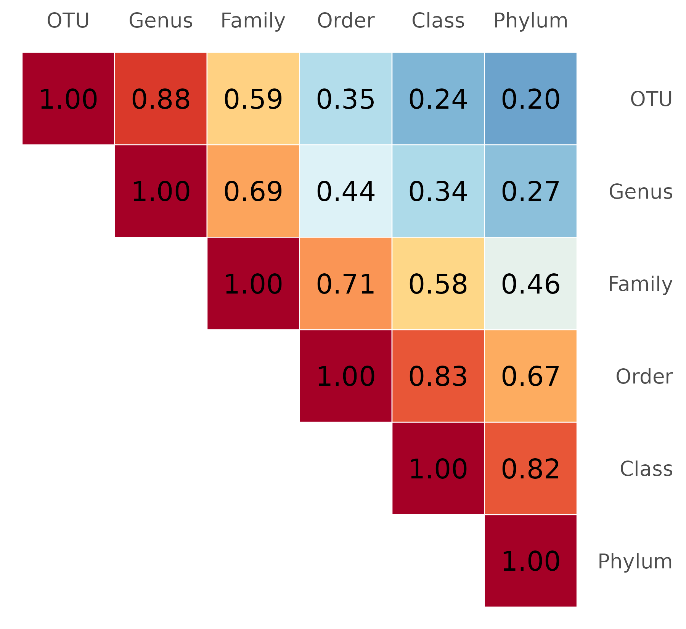
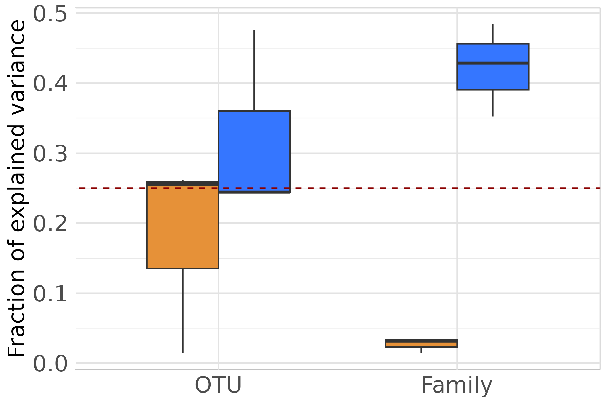
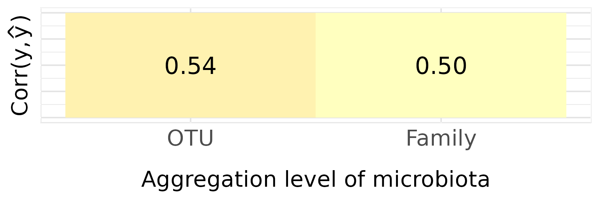
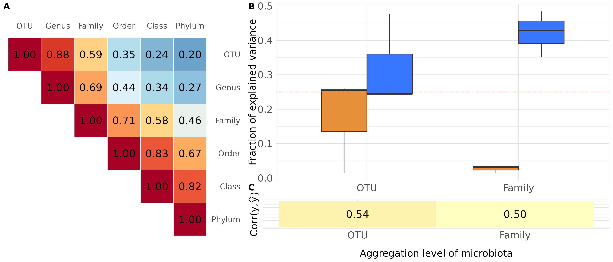
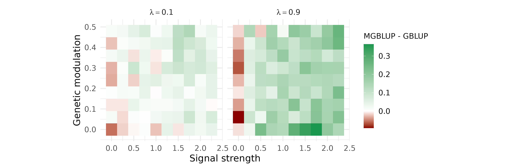

Hologenomic data for phenotypic prediction
hologenomic-data-for-phenotypic-prediction.RmdIn this vignette, by generating controlled and contrasted biological scenarios across a broad parameter space, we examine how microbiota granularity, variance structure and host modulation influence variance component estimation and phenotypic prediction. We show that the added value of microbiota integration is highly context-dependent, and provide a structured framework to interrogate when and how integrating microbiota into models may enhance prediction in breeding applications. These results have been further detailed and explained in a publication in preparation.
library(magrittr)
library(MoBPS)
library(cowplot)
library(tidyverse)
library(ggrepel)
library(ggridges)
library(phyloseq)
library(ggh4x)
library(ggplot2)
library(glue)
library(BGLR)
library(ggtext)
library(RColorBrewer)
library(FactoMineR)
library(compositions)
library(RITHMS)
library(plyr)
greens_pal <- c("#6df17c", "#2ede41", "#26c537", "#1da42c", "#157e21", "#0E5e17")
session_theme <- theme_minimal() +
theme(
panel.border = element_rect(colour = "white", fill = NA),
panel.grid.major = element_line(colour = "#e3e3e3"),
panel.grid.minor = element_line(colour = "#e9e9e9"),
axis.title = element_text(size = 8),
axis.text = element_text(size = 7),
plot.title = element_text(size = 12),
legend.title = element_text(size = 7),
legend.text = element_text(size = 7),
legend.position = "none"
)
theme_set(session_theme)Load data
The data matrix loaded is the count matrix of taxa (in columns) across individuals (in rows). In our toy dataset, a subset from Déru et al. 2020, there are 1845 species and 780 individuals coming from the conventional diet. Genotypes are encoded as 0, 1, 2 and reachable thanks to the “population” attribute.
data("Deru")
founder_object <- Deru
founder_object$microbiome[1:5, 1:5]
#> OTU1 OTU2 OTU6793 OTU3 OTU4
#> 1 30 593 4 630 414
#> 2 254 275 62 1131 446
#> 3 181 487 164 1472 656
#> 4 469 665 45 640 328
#> 5 771 519 21 758 347
data("taxonomy")
taxonomy <- taxonomy
taxonomy[1:5, 1:5]
#> OTU Kingdom Phylum Class Order
#> <char> <char> <char> <char> <char>
#> 1: OTU1 Bacteria Firmicutes Bacilli Lactobacillales
#> 2: OTU2 Bacteria Firmicutes Bacilli Lactobacillales
#> 3: OTU6793 Bacteria Proteobacteria Gammaproteobacteria Enterobacteriales
#> 4: OTU3 Bacteria Firmicutes Clostridia Clostridiales
#> 5: OTU4 Bacteria Firmicutes Clostridia ClostridialesAdditional functions
Helper functions specific to this study cover kernel construction,
model fitting, and result extraction. They are defined once here and
shared across all sections. Note that in run_BGLR()
function, nIter=10 in this vignette but was at 1000 to
generate the following figures.
aggregate_at_rank <- function(microbiota, taxonomy, rank = "Genus",
taxa_assign = NULL) {
if (rank %in% colnames(taxonomy)) {
id_group <- dplyr::inner_join(
microbiota |> t() |> as_tibble(rownames = "OTU"),
taxonomy, by = "OTU"
) |>
dplyr::select(!prevalence) |>
drop_na() |>
group_by(.data[[rank]])
agg_microbio <- id_group |>
summarise_if(is.numeric, sum) |>
column_to_rownames(rank) |>
t() |>
as_tibble()
attr(agg_microbio, "agg_id") <- group_indices(id_group)
} else {
id_group <- microbiota |> t() |> as_tibble() |>
mutate(assignation = glue("Cluster_{taxa_assign}")) |>
group_by(assignation)
agg_microbio <- id_group |>
dplyr::summarise(across(-any_of("assignation"), sum)) |>
drop_na() |>
column_to_rownames("assignation") |>
t() |>
as_tibble()
attr(agg_microbio, "agg_id") <- group_indices(id_group)
}
return(agg_microbio)
}
process_microbiome <- function(agg_microbiome) {
B_scaled <- agg_microbiome |> map(clr) |> identity()
B <- lapply(B_scaled, as.data.frame)
B_full <- B |> bind_rows(.id = "Generation")
return(B_full[, -1])
}
build_kernel_agg <- function(gen_simu, taxonomy_table, agg_level,
taxa_assign = NULL) {
B_long <- gen_simu[-c(1, 2, 3)] |>
map(get_microbiomes, transpose = TRUE, CLR = FALSE)
B_agg <- B_long |>
map(aggregate_at_rank,
taxonomy = taxonomy_table,
rank = agg_level,
taxa_assign = taxa_assign)
M_join <- process_microbiome(B_agg)
p <- ncol(M_join)
tcrossprod(scale(as.matrix(M_join))) / p
}
build_kernel <- function(gen_simu,
type = "M"){
if(type == "M"){
#####
# Extract microbiomes
#####
B_long <- gen_simu[-c(1,2,3)] |> map(get_microbiomes, transpose = T, CLR = F)
M_join <- process_microbiome(B_long)
M_scaled <- scale(as.matrix(M_join))
p <- ncol(M_scaled)
K <- tcrossprod(M_scaled)/p
}else{
#####
# Extract genotypes
#####
G_long <- gen_simu[-c(1,2,3)] |> map(get_genotypes) |> bind_rows()
G_scaled <- safe_scale(G_long)
s <- ncol(G_scaled)
K <- tcrossprod(G_scaled)/s
}
return(K)
}
safe_scale <- function(G) {
center <- colMeans(G, na.rm = TRUE)
scale_ <- apply(G, 2, sd, na.rm = TRUE)
scale_[is.na(scale_) | scale_ == 0] <- 1
G_centered <- sweep(G, 2, center, "-")
G_scaled <- sweep(G_centered, 2, scale_, "/")
return(as.matrix(G_scaled))
}
get_genotypes <- function(data) {
return(data |> pluck("genotypes") |> t() |> as.data.frame())
}
run_BGLR <- function(G, M = NULL, yNA, index) {
set.seed(Sys.time())
ETA <- list(genotype = list(K = G, model = "RKHS", scale = FALSE))
if (!is.null(M))
ETA[["microbiota"]] <- list(K = M, model = "RKHS", scale = FALSE)
fm <- BGLR(y = yNA, ETA = ETA, nIter = 3000, burnIn = 1000,
saveAt = "RKHS_", verbose = FALSE)
list(
coeffMHat = if (is.null(M)) NULL else fm[["ETA"]][["microbiota"]][["u"]],
coeffGHat = fm[["ETA"]][["genotype"]][["u"]],
varM = if (is.null(M)) NULL else
mean(scan("RKHS_ETA_microbiota_varU.dat", quiet = TRUE), na.rm = TRUE),
varG = mean(scan("RKHS_ETA_genotype_varU.dat", quiet = TRUE), na.rm = TRUE),
varE = mean(scan("RKHS_varE.dat", quiet = TRUE), na.rm = TRUE),
yHat = fm$yHat[index]
)
}
## Unified MBLUP_kernel:
## agg_level = NULL → build_kernel(type = "G"/"M")
## agg_level = "Family" etc. → build_kernel_agg(...)
MBLUP_kernel <- function(gen_simu,
MBLUP = FALSE,
taxonomy_table = NULL,
agg_level = NULL,
taxa_assign = NULL) {
last_gen <- tail(names(gen_simu), n = 1)
if (!is.null(agg_level)) {
M <- if (MBLUP)
build_kernel_agg(gen_simu = gen_simu,
taxonomy_table = taxonomy_table,
agg_level = agg_level,
taxa_assign = taxa_assign)
else NULL
} else {
M <- if (MBLUP) build_kernel(gen_simu = gen_simu, type = "M") else NULL
}
G <- build_kernel(gen_simu = gen_simu, type = "G")
Y <- gen_simu[-c(1, 2, 3)] |> map(get_phenotypes) |>
bind_rows(.id = "Generation")
yNA <- Y$y
G5_index <- which(Y$Generation == last_gen)
yNA[G5_index] <- NA
results <- run_BGLR(G = G, M = M, yNA = yNA, index = G5_index)
tibble(
coeffMHat = list(results$coeffMHat),
coeffGHat = list(results$coeffGHat),
varM = list(results$varM),
varG = list(results$varG),
varE = list(results$varE),
gb = list(Y$gb),
gq = list(Y$gq),
real_y = list(Y$y[G5_index]),
yHat = list(results$yHat)
)
}Explore the correlation between kernel matrices
We first examine how kernel matrices built from microbiota data at
different taxonomic levels relate to one another. For each simulation
replicate, we construct six kernel matrices — from OTU to Phylum level —
and compute pairwise RV coefficients between them using
coeffRV() from FactoMineR. A RV
coefficient close to 1 indicates that two matrices carry similar
structural information about inter-individual relationships.
Simulation
For each replicate, we simulate a hologenomic population with
holo_simu() and compute pairwise RV coefficients between
the six kernel matrices. The chunk below runs 3
replicates for illustration; the results presented in the paper
were obtained from 100 replicates (seeds drawn via
sample(100:100000, 100) with
set.seed(200)).
agg_levels <- c("OTU", "Genus", "Family", "Order", "Class", "Phylum")
n_it <- 3
set.seed(200)
seeds <- sample(100:100000, n_it)
cor_results_list <- vector("list", n_it)
for (i in seq_len(n_it)) {
taxa_assign_g <- assign_taxa(
founder_object,
type = "Family",
taxonomy = taxonomy,
seed = seeds[i]
)
generations_simu <- holo_simu(
h2 = 0.25,
b2 = 0.25,
correlation = 0.5,
n_gen = 5,
founder_object = founder_object,
n_clust = taxa_assign_g,
n_ind = 300,
verbose = FALSE,
noise.microbiome = 0.6,
effect.size = 0.3,
lambda = 0.5,
selection = FALSE,
taxonomy_table = taxonomy,
aggregate_rank = "Family",
seed = seeds[i]
)
kernels_agg <- lapply(agg_levels, function(lvl)
build_kernel_agg(generations_simu,
taxonomy_table = taxonomy,
agg_level = lvl,
taxa_assign = taxa_assign_g)
)
pairs <- combn(seq_along(kernels_agg), 2)
cors <- apply(pairs, 2, function(idx)
coeffRV(kernels_agg[[idx[1]]], kernels_agg[[idx[2]]])$rv
)
mat <- matrix(NA, 6, 6)
mat[upper.tri(mat)] <- cors
diag(mat) <- 1
cor_results_list[[i]] <- mat
}
saveRDS(cor_results_list, "vignette_kernel_corr.rds")Averaging across replicates
cor_results_list <- readRDS("vignette_kernel_corr.rds")
mean_mat <- Reduce("+",
lapply(cor_results_list, function(m) { m[is.na(m)] <- 0; m })
) / Reduce("+",
lapply(cor_results_list, function(m) !is.na(m))
)
idx <- which(upper.tri(mean_mat), arr.ind = TRUE)
idx <- idx[order(idx[, 1], idx[, 2]), ]
mean_mat[idx] <- mean_mat[upper.tri(mean_mat)]
colnames(mean_mat) <- rownames(mean_mat) <-
c("OTU", "Genus", "Family", "Order", "Class", "Phylum")Figure 1A
The heatmap below displays the mean RV coefficient between each pair of aggregation levels. Values close to 1 indicate that the two kernels encode similar inter-individual similarity structures.
Note. The figure shown here is based on 3 replicates. Figure 1A in the paper is based on 100 replicates and may differ slightly.
agg_levels <- c("OTU", "Genus", "Family", "Order", "Class", "Phylum")
df_corr <- mean_mat |>
as.data.frame() |>
rownames_to_column("Var1") |>
pivot_longer(-Var1, names_to = "Var2", values_to = "value") |>
mutate(
Var1 = factor(Var1, levels = rev(agg_levels)),
Var2 = factor(Var2, levels = agg_levels)
) |>
filter(!is.nan(value))
p_corr <- ggplot(df_corr, aes(Var2, Var1, fill = value)) +
geom_tile(color = "white") +
geom_text(aes(label = sprintf("%.2f", value)), size = 6) +
scale_fill_gradientn(
colours = rev(brewer.pal(10, "RdYlBu")),
limits = c(0, 1),
oob = scales::squish,
name = "Correlation"
) +
coord_fixed() +
theme_minimal(base_size = 16) +
scale_y_discrete(position = "right") +
scale_x_discrete(position = "top") +
theme(
axis.title = element_blank(),
panel.grid = element_blank(),
legend.position = "none"
)
p_corr
ggsave("../man/figures/kernel_corplots.png")
Variance decomposition and phenotypic prediction across aggregation levels
We evaluate how the choice of taxonomic aggregation level affects two
objectives: (i) the accuracy of variance component estimation
(microbiability
and direct heritability
),
and (ii) phenotypic prediction accuracy in the last generation. For each
replicate and each aggregation level, we fit an MGBLUP model using
MBLUP_kernel(), which wraps a BGLR RKHS fit on both the
microbiota kernel and the genomic relationship matrix.
Simulation
The chunk below runs 3 replicate × 2 aggregation levels for illustration; the paper used 500 replicates × 6 levels.
agg_levels_demo <- c("OTU", "Family")
n_it <- 3
set.seed(200)
seeds <- sample(100:100000, n_it)
results_list <- vector("list", 0)
for (lvl in agg_levels_demo) {
for (i in seq_len(n_it)) {
taxa_assign_g <- assign_taxa(
founder_object,
type = "hclust",
taxonomy = taxonomy,
seed = seeds[i]
)
generations_simu <- holo_simu(
h2 = 0.25,
b2 = 0.25,
correlation = 0.5,
n_gen = 5,
founder_object = founder_object,
n_clust = taxa_assign_g,
n_ind = 300,
verbose = FALSE,
noise.microbiome = 0.6,
effect.size = 0.3,
lambda = 0.5,
selection = FALSE,
taxonomy_table = taxonomy,
aggregate_rank = "Family",
seed = seeds[i]
)
res <- MBLUP_kernel(generations_simu,
MBLUP = TRUE,
taxonomy_table = taxonomy,
agg_level = lvl) |>
mutate(sim_ID = i, agg_level = lvl, seed = seeds[i])
results_list <- c(results_list, list(res))
}
}
df <- bind_rows(results_list)
saveRDS(df, "vignette_variance_decomp.rds")Data preparation
df <- readRDS("vignette_variance_decomp.rds")
agg_levels_ord <- c("OTU", "Genus", "Family", "Order", "Class", "Phylum")
df_join <- df |>
mutate(
varM = unlist(varM),
varG = unlist(varG),
varE = unlist(varE),
b2_hat = varM / (varE + varM + varG),
h2_hat = varG / (varE + varM + varG)
) |>
pivot_longer(c(b2_hat, h2_hat), values_to = "Estimate", names_to = "Metric")
test <- df_join |>
mutate(varE = ifelse(is.nan(varE), NA, varE)) |>
group_by(agg_level) |>
mutate(
mu = mean(log(varE), na.rm = TRUE),
sigma = sd(log(varE), na.rm = TRUE),
varE_imp = ifelse(is.na(varE), exp(rnorm(1, mu, sigma)), varE)
) |>
ungroup()Figure 1B — Variance decomposition
p2 <- test |>
mutate(
Estimate = if_else(
is.na(varE),
if_else(Metric == "b2_hat",
varM / (varE_imp + varM + varG),
varG / (varE_imp + varM + varG)),
Estimate
),
agg_level = factor(agg_level, levels = agg_levels_ord)
) |>
ggplot(aes(x = agg_level, y = Estimate, fill = as.factor(Metric))) +
geom_boxplot(width = 0.6, position = "dodge", outliers = FALSE) +
geom_abline(intercept = 0.25, slope = 0, linetype = 2, color = "darkred") +
scale_fill_manual(values = c("#e69138ff", "#3576ffff")) +
labs(
y = "Fraction of explained variance"
) +
theme(
panel.background = element_rect(fill = "white"),
panel.grid.major = element_line(colour = "#e3e3e3"),
panel.grid.minor = element_line(colour = "#e9e9e9"),
axis.title = element_text(size = 16),
axis.title.x = element_blank(),
axis.text = element_text(size = 16),
plot.title = element_markdown(size = 16, hjust = 0.5,
margin = margin(b = 6)),
legend.position = "none"
)
p2
ggsave("../man/figures/variance_est_boxplot.png")
Figure 1C — Phenotypic prediction accuracy
p3 <- test |>
rowwise() |>
dplyr::mutate(
cor_y = cor(real_y, yHat),
agg_level = factor(agg_level, levels = agg_levels_ord)
) |>
ungroup() |>
dplyr::summarise(mean_cor_y = mean(cor_y), .by = agg_level) |>
ggplot(aes(x = agg_level, y = 0, fill = mean_cor_y)) +
geom_raster() +
geom_text(aes(label = sprintf("%.2f", mean_cor_y)), size = 6) +
scale_fill_gradientn(
colours = rev(brewer.pal(5, "RdYlBu")),
limits = c(0, 1),
oob = scales::squish
) +
labs(
x = "Aggregation level of microbiota",
y = expression(paste("Corr(" * y * "," * hat(y) * ")"))
) +
theme(
panel.background = element_rect(fill = "white"),
panel.grid.major = element_line(colour = "#e3e3e3"),
panel.grid.minor = element_line(colour = "#e9e9e9"),
axis.title = element_text(size = 16),
axis.title.x = element_text(margin = margin(t = 15)),
axis.text = element_text(size = 16),
axis.text.y = element_blank(),
axis.ticks.y = element_blank(),
legend.position = "none"
)
p3
ggsave("../man/figures/pheno_cor.png")
Figure 1 — Assembly
Note. The figures shown here are based on 3 replicates × 2 aggregation levels. Figure 1 in the paper uses 500 replicates × 6 levels.
B_C <- plot_grid(p2, p3,
nrow = 2,
labels = c("B", "C"),
rel_heights = c(3, 1),
vjust = c(1.5, -1))
fig1 <- plot_grid(p_corr, B_C,
labels = c("A", ""),
rel_widths = c(1, 1.5))
fig1
ggsave("../man/figures/fig1.png", width = 14, height = 6)
Comparing MGBLUP and GBLUP across simulation conditions
We compare the phenotypic prediction accuracy of MGBLUP (genomic +
microbiota kernels) against GBLUP (genomic kernel only) across a grid of
simulation conditions defined by two parameters: the microbiome signal
strength
()
and the genetic modulation of microbiota composition
(effect.size
,
with
OTU groups). Prediction accuracy is measured as the correlation between
observed and predicted phenotypes in the last generation. The difference
is averaged across replicates and displayed as a contour plot for three
values of the transmission parameter
.
Simulation
The parameter grid follows a simplified design as the one in the
paper. To reproduce the one from the article, change the values in the
following chunk with these one : 25 values of
(seq(0, 0.49, 0.02)), 25 values of effect.size
(seq(0, 4.8, 0.2)), and three values of
(0.1, 0.5, 0.9). The chunk below runs 1
replicate across the grid for illustration; the paper used
100 replicates.
set.seed(200)
n_it = 1
params_df_full <- tibble(b2 = seq(0, 0.49, 0.05)) |>
crossing(tibble(effect.size = seq(0, 4.8, 0.6)),
tibble(lambda = c(0.1, 0.9)),
tibble(replicate = 1:n_it)) |>
dplyr::mutate(sim_ID = row_number(),
seed = sample(100:1000000, n()),
.before = everything())
results_list <- vector("list", nrow(params_df_full))
for (i in seq_len(nrow(params_df_full))) {
print(i)
p <- params_df_full[i, ]
taxa_assign_g <- assign_taxa(
founder_object,
type = "hclust",
taxonomy = taxonomy,
seed = p$seed
)
generations_simu <- holo_simu(
h2 = 0.2,
b2 = p$b2,
correlation = 0.5,
n_gen = 3,
founder_object = founder_object,
n_clust = taxa_assign_g,
n_ind = 300,
verbose = FALSE,
noise.microbiome = 0.6,
effect.size = p$effect.size,
lambda = p$lambda,
selection = FALSE,
taxonomy_table = taxonomy,
aggregate_rank = "Family",
seed = p$seed
)
res_gblup <- MBLUP_kernel(generations_simu, MBLUP = FALSE) |>
dplyr::mutate(sim_ID = p$sim_ID, id_source = "GBLUP",
b2 = p$b2, effect.size = p$effect.size, lambda = p$lambda)
res_mgblup <- MBLUP_kernel(generations_simu, MBLUP = TRUE) |>
dplyr::mutate(sim_ID = p$sim_ID, id_source = "MGBLUP",
b2 = p$b2, effect.size = p$effect.size, lambda = p$lambda)
results_list[[i]] <- bind_rows(res_gblup, res_mgblup)
}
df_contour <- bind_rows(results_list)
saveRDS(df_contour, "vignette_contour.rds")Data preparation
df_contour <- readRDS("vignette_contour.rds")
contour_df <- df_contour |>
mutate(
real_y = map(real_y, unlist),
yHat = map(yHat, unlist),
cor_y = map2_dbl(real_y, yHat, cor),
signal_strength = b2 / 0.2,
gen_mic = effect.size / sqrt(100)
) |>
select(cor_y, signal_strength, gen_mic, sim_ID, id_source, lambda) |>
pivot_wider(names_from = id_source, values_from = cor_y) |>
dplyr::mutate(delta = MGBLUP - GBLUP) |>
dplyr::summarise(mean_delta = mean(delta, na.rm = TRUE),
n = n(),
.by = c(signal_strength, gen_mic, lambda))Figure 2
p_contour <- contour_df |>
mutate(lambda_lab = glue("lambda=={lambda}")) |>
ggplot(aes(x = signal_strength, y = gen_mic, fill = mean_delta)) +
geom_tile() +
scale_fill_gradientn(
colors = c("darkred", "#ffffff", "#1a9850"),
values = scales::rescale(
c(min(contour_df$mean_delta), 0, max(contour_df$mean_delta))
),
name = "MGBLUP - GBLUP"
) +
facet_grid(~ lambda_lab, labeller = label_parsed) +
theme_minimal(base_size = 16) +
labs(x = "Signal strength",
y = "Genetic modulation") +
theme(
aspect.ratio = 1,
legend.position = "right",
legend.title = element_text(size = 13)
) +
guides(fill = guide_colorbar(barwidth = 1.2, barheight = 10))
p_contour
ggsave("../man/figures/contour_plot.png", width = 12, height = 4)Note. The figure shown here is based on 1 replicate across the simplified parameter grid. Figure 2 in the paper averages over 100 replicates and may differ substantially in the intermediate regime where is close to zero.

For any ideas or collaboration relating to the package, feel free to contact: solene.pety@inrae.fr